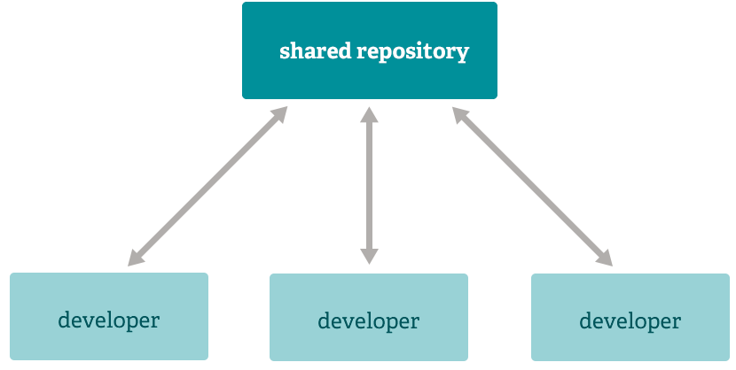

<!doctype html>
<html lang="en">
    <head>
        <meta charset="utf-8">
        <meta name="viewport" content="width=device-width, initial-scale=1.0, maximum-scale=1.0, user-scalable=no">

        <title>Introdução ao GIT</title>
        <link rel="stylesheet" href="./css/reveal.css">
        <link rel="stylesheet" href="./css/theme/blood.css" id="theme">
        <link rel="stylesheet" href="./css/highlight/zenburn.css">
        <link rel="stylesheet" href="./css/print/paper.css" type="text/css" media="print">
          <link rel="stylesheet" href="./_assets/assets/custom.css">


    </head>
    <body>

        <div class="reveal">
            <div class="slides"><section  data-markdown><script type="text/template">


## Introdução ao git

Autor: **Andrew Ribeiro**
</script></section><section  data-markdown><script type="text/template">
#### Conteúdos

- O que é git?
- História
- Como funciona?
- Exemplos
</script></section><section ><section data-markdown><script type="text/template">


## O que é git?
</script></section><section data-markdown><script type="text/template">
<!-- .slide: data-background-image="assets/project.jpeg" -->

De acordo com site oficial

> GIT é um sistema de controle de versão distribuido, gratuito e **opensource**
desenhado para lidar versionamento de pequenos a grandes projetos com rapidez e eficiência.
</script></section><section data-markdown><script type="text/template">
Controlar versões do projeto


</script></section></section><section ><section data-markdown><script type="text/template">


### História
</script></section><section data-markdown><script type="text/template"><!-- .slide: data-background-image="assets/belllabs.jpg" -->

## Bell Labs, 1972

Marc Rochkind criou o primeiro SCCS (Source Code Control System)


</script></section><section data-markdown><script type="text/template">
<!-- .slide: data-background-image="assets/primitive.jpeg" -->

### Muito primitivo

Apenas salvava um histórico
</script></section><section data-markdown><script type="text/template">
<!-- .slide: data-background-image="assets/centralized.png" -->

### Sistema de controle de versão centralizado

O mais famoso SVN (Subversion)
</script></section><section data-markdown><script type="text/template">
<!-- .slide: data-background-image="assets/distributed.jpg" -->

### Sistema de controle de versão distribuido
</script></section><section data-markdown><script type="text/template">
<!-- .slide: data-background-image="assets/distributed.jpg" -->

Em 2005, no desenvolvimento do Kernel do linux era mantido em  **BitKeeper**
</script></section><section data-markdown><script type="text/template">
<!-- .slide: data-background-image="assets/linusmad.jpg" -->

Linus Torvald deu início no próprio sistema de versionamento
## GIT
</script></section><section data-markdown><script type="text/template">
<!-- .slide: data-background-image="assets/linushappy.jpg" -->

Na gíria Britânica, **Git** significa _pessoa desagradável_.

> "Sou um egoísta bastardo. Nomeio todos meus projetos com algo relacionado a mim."
</script></section><section data-markdown><script type="text/template">
<!-- .slide: data-background-image="assets/distributed.jpg" -->

#### Atualmente, Git é uma das ferramentas mais usadas no mundo
</script></section></section><section ><section data-markdown><script type="text/template">
## Como funciona?
</script></section><section data-markdown><script type="text/template">
<!-- .slide: data-background="rgb(244, 244, 244)" -->

<p style="color: rgb(69,69,69)">Arquitetura Distribuida</p>


</script></section><section data-markdown><script type="text/template">
<!-- .slide: data-background="rgb(244, 244, 244)" -->

<p style="color: rgb(69,69,69)">Ambientes separados</p>


</script></section></section><section  data-markdown><script type="text/template">
## Exercícios
</script></section></div>
        </div>

        <script src="./lib/js/head.min.js"></script>
        <script src="./js/reveal.js"></script>

        <script>
            function extend() {
              var target = {};
              for (var i = 0; i < arguments.length; i++) {
                var source = arguments[i];
                for (var key in source) {
                  if (source.hasOwnProperty(key)) {
                    target[key] = source[key];
                  }
                }
              }
              return target;
            }

            // Optional libraries used to extend on reveal.js
            var deps = [
              { src: './lib/js/classList.js', condition: function() { return !document.body.classList; } },
              { src: './plugin/markdown/marked.js', condition: function() { return !!document.querySelector('[data-markdown]'); } },
              { src: './plugin/markdown/markdown.js', condition: function() { return !!document.querySelector('[data-markdown]'); } },
              { src: './plugin/highlight/highlight.js', async: true, callback: function() { hljs.initHighlightingOnLoad(); } },
              { src: './plugin/zoom-js/zoom.js', async: true },
              { src: './plugin/notes/notes.js', async: true },
              { src: './plugin/math/math.js', async: true }
            ];

            // default options to init reveal.js
            var defaultOptions = {
              controls: true,
              progress: true,
              history: true,
              center: true,
              transition: 'default', // none/fade/slide/convex/concave/zoom
              dependencies: deps
            };

            // options from URL query string
            var queryOptions = Reveal.getQueryHash() || {};

            var options = {"transition":"slide"};
            options = extend(defaultOptions, options, queryOptions);
        </script>


        <script>
          Reveal.initialize(options);
        </script>
    </body>
</html>
